Personnages
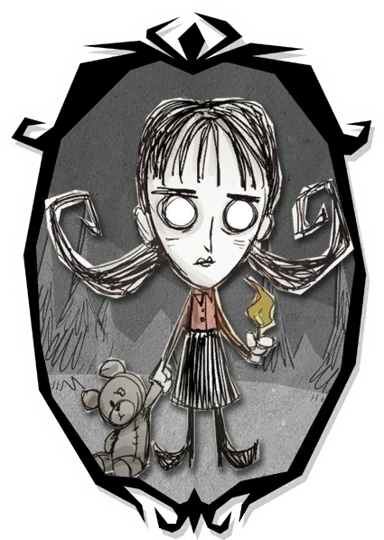
Willow est une jeune pyromane fascinée par le feu. Elle commence l'aventure avec un briquet infini qui lui permet de produire de la lumière à tout moment. Elle résiste mieux aux incendies que les autres personnages et apprécie particulièrement les flammes. Toutefois, lorsqu'elle voit sa santé mentale diminuer, elle peut déclencher des feux involontaires autour d'elle.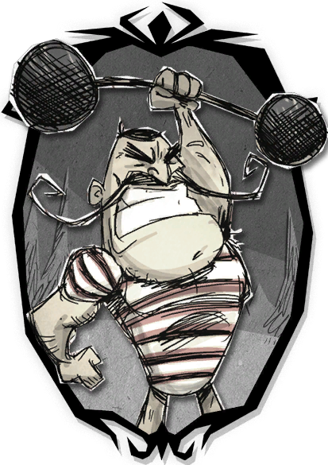
Wolfgang est un homme doté d'une force hors du commun. Sa puissance dépend directement de son niveau de faim : plus il est bien nourri, plus il inflige de dégâts et possède de points de vie. À l'inverse, lorsqu'il a faim, il devient physiquement plus faible. C'est un personnage redoutable pour affronter les boss mais qui demande une gestion constante des réserves de nourriture.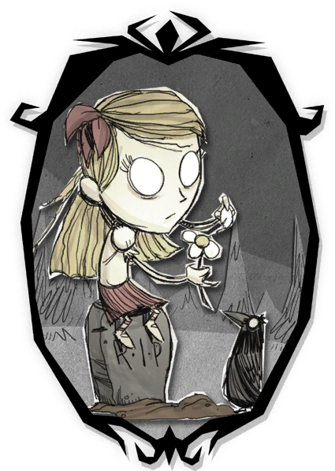
Wendy est une jeune fille sombre et mélancolique hantée par le souvenir de sa sœur jumelle. Grâce à la Fleur d'Abigail qu'elle possède dès le début, elle peut invoquer le fantôme de sa sœur pour combattre à ses côtés. Abigail est particulièrement efficace contre les groupes d'ennemis. Wendy inflige cependant moins de dégâts que les autres personnages lorsqu'elle combat seule.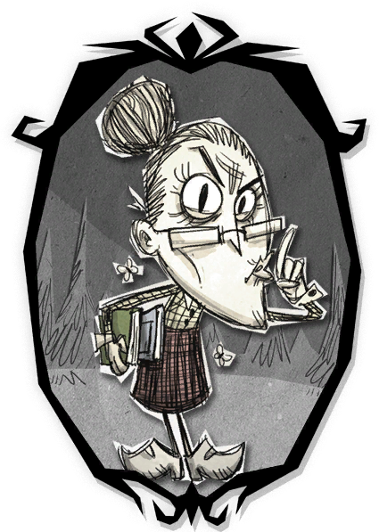
Wickerbottom est une bibliothécaire extrêmement intelligente. Elle peut fabriquer plusieurs ouvrages conférant de puissants effets, comme faire pousser instantanément les cultures ou invoquer des créatures. Elle maîtrise dès le début de nombreuses recettes sans avoir besoin de machine scientifique. En contrepartie, elle ne peut pas s'endormir naturellement.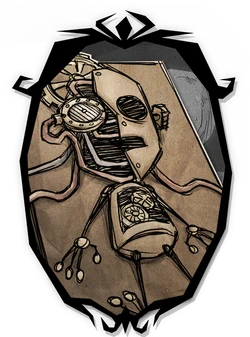
WX-78 est un automate qui cherche sans cesse à devenir plus puissant. Il peut augmenter définitivement sa santé, sa faim et sa santé mentale en consommant certains modules spécifiques. La foudre recharge son énergie et lui procure un bonus temporaire de vitesse. Son principal défaut est sa vulnérabilité à la pluie, qui lui fait perdre rapidement de la santé.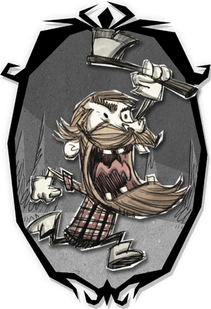
Woodie est un bûcheron canadien toujours accompagné de Lucy, sa fidèle hache parlante. Cette hache coupe les arbres beaucoup plus rapidement qu'un outil classique. Lorsqu'il coupe trop de bois ou subit certaines conditions particulières, Woodie peut se transformer en créature sauvage. Ses transformations lui offrent de nouvelles capacités adaptées à différentes situations.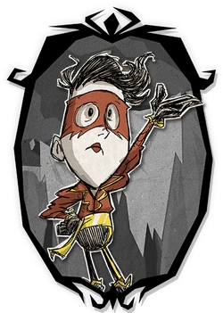
Wes est un mime dont le rôle est principalement de représenter le mode difficile. Il possède moins de santé, moins de faim et moins de santé mentale que les autres survivants. Son unique spécialité consiste à fabriquer des ballons ayant quelques usages limités. Jouer Wes est considéré comme un défi réservé aux joueurs expérimentés.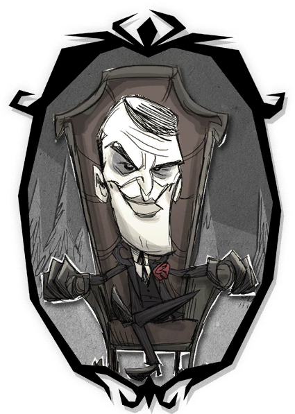
Ancien dirigeant du Constant, Maxwell maîtrise les pouvoirs des ombres. Il peut invoquer plusieurs serviteurs chargés de combattre, récolter des ressources ou couper du bois à sa place. Son intelligence exceptionnelle lui confère une santé mentale très élevée. Cependant, sa faible quantité de points de vie le rend fragile lors des affrontements.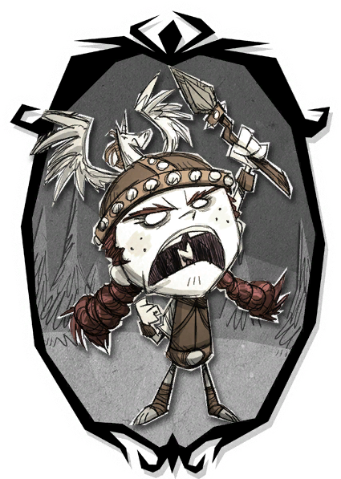
Wigfrid est une actrice convaincue d'être une véritable Valkyrie. Elle commence la partie avec un équipement de combat supérieur à celui des autres survivants. Elle gagne de la santé et de la santé mentale en combattant ses ennemis. Son inconvénient majeur est qu'elle ne peut se nourrir qu'avec de la viande et des plats à base de viande.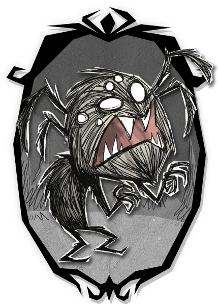
Webber est un garçon coincé à l'intérieur d'une araignée géante. Contrairement aux autres personnages, les araignées le considèrent comme un allié naturel et ne l'attaquent pas. Il peut créer ses propres nids et développer une véritable armée d'araignées. En revanche, les cochons deviennent automatiquement hostiles à son égard.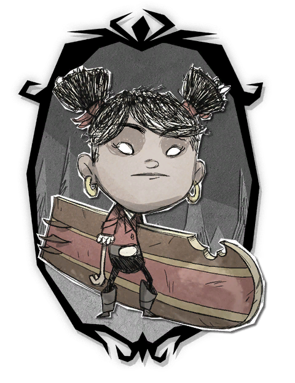
Walani est une surfeuse passionnée par l'océan. Sa planche lui permet de se déplacer rapidement sur l'eau et d'explorer facilement les différentes îles de l'archipel. Elle perd moins de santé mentale lorsqu'elle navigue. Son style de jeu est particulièrement adapté à l'exploration maritime.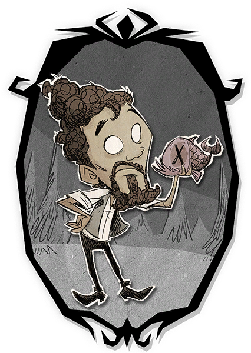
Warly est un chef cuisinier français spécialisé dans la gastronomie. Il peut préparer des plats exclusifs offrant des bonus uniques. Sa marmite portable lui permet de cuisiner dès le début de la partie. Cependant, il se lasse rapidement de manger plusieurs fois le même repas et doit donc varier constamment son alimentation.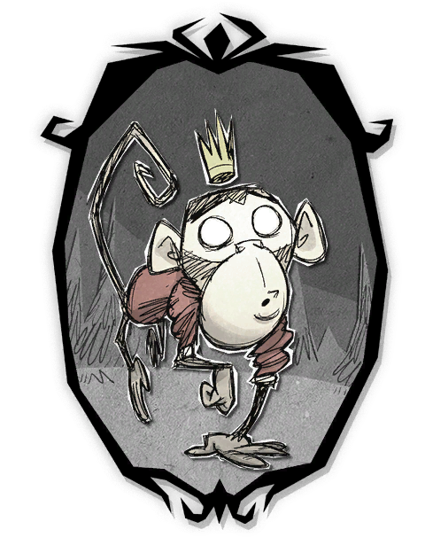
Wilbur est un singe extrêmement agile découvert sur une île mystérieuse. Il se déplace naturellement plus vite que la majorité des survivants. Son alimentation repose principalement sur les bananes qu'il adore consommer. Grâce à sa vitesse, il est excellent pour l'exploration et la collecte de ressources.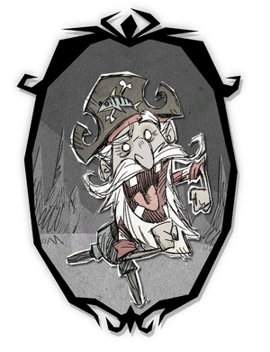
Woodlegs est un vieux pirate ayant passé sa vie sur les océans. Il dispose de plusieurs recettes exclusives orientées vers la navigation et l'aventure maritime. Son expérience lui permet de mieux exploiter les ressources de l'océan. Il est particulièrement efficace dans les longues expéditions entre les îles.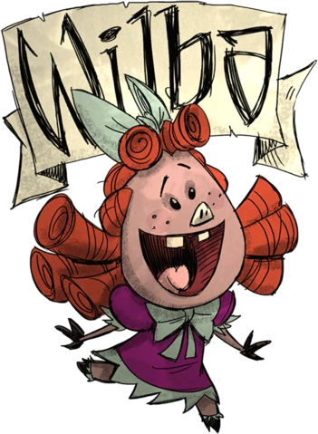
Wilba est la princesse du royaume des cochons. Sous certaines conditions, elle peut se transformer en une créature sauvage très puissante inspirée des loups-garous. Cette forme améliore considérablement ses capacités de combat. Elle possède également des interactions uniques avec les habitants des villages cochons.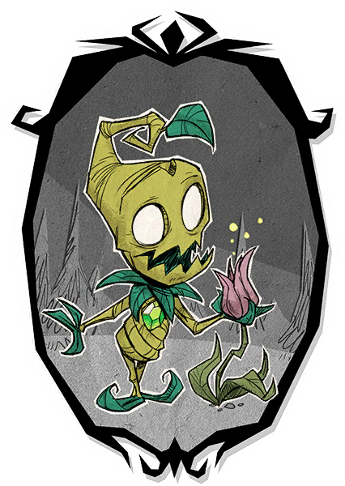
Wormwood est une créature végétale vivante liée à la nature. Il peut planter instantanément des graines sans utiliser d'outils agricoles. Son gameplay est centré sur l'agriculture et la survie écologique. Cependant, il ne peut pas récupérer de vie simplement en mangeant comme les autres personnages.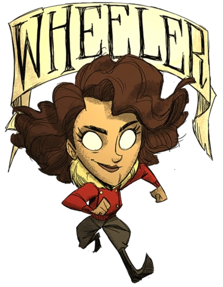
Wheeler est une exploratrice intrépide passionnée par les découvertes. Elle utilise un lance-pierre pour attaquer ses ennemis à distance, ce qui lui permet d'éviter de nombreux dangers. Sa mobilité élevée facilite l'exploration des ruines et des temples. Elle excelle dans la découverte de nouvelles zones du monde.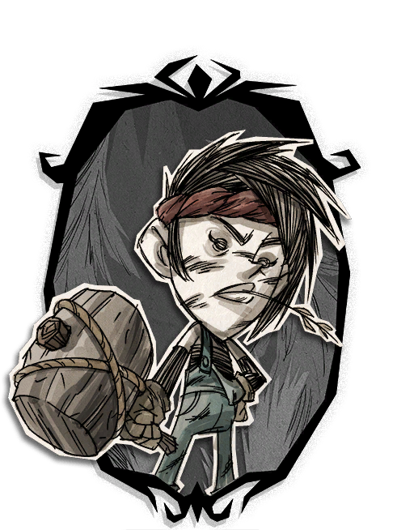
Winona est une ouvrière spécialisée dans les inventions mécaniques. Elle construit diverses machines capables d'automatiser certaines tâches du camp. Ses structures sont très appréciées en coopération. Elle est particulièrement utile pour les grandes bases multijoueurs.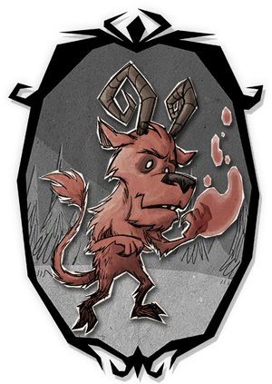
Wortox est un esprit renard venu d'une autre dimension. Il peut absorber les âmes des créatures pour se soigner ou se téléporter sur de courtes distances. Son excellente mobilité lui permet de se déplacer rapidement à travers la carte. Il reste cependant plus complexe à maîtriser que la plupart des personnages.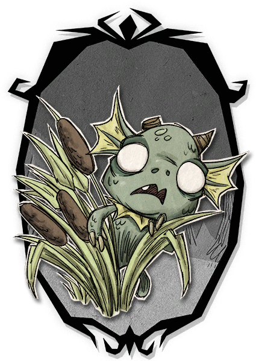
Wurt est une jeune Merm rejetée par son peuple. Elle peut recruter d'autres Merms et construire de véritables colonies. Son régime alimentaire végétarien influence fortement sa manière de jouer. À long terme, elle peut devenir la dirigeante d'un important royaume Merm.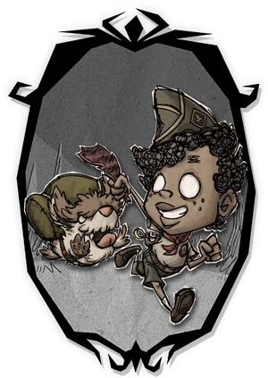
Walter est un jeune scout accompagné de son fidèle chien Woby. Son lance-pierre lui permet d'attaquer à distance dès le début de la partie. Il excelle dans l'exploration et le soutien de son équipe. Woby peut également transporter des objets et aider lors des voyages.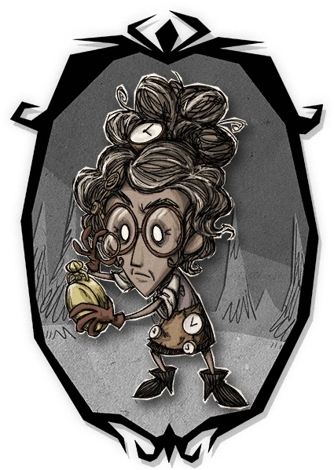
Wanda manipule le temps grâce à plusieurs montres spéciales. Son âge influence directement ses statistiques : plus elle est âgée, plus elle est vulnérable mais aussi plus dangereuse. Elle peut utiliser des montres pour se déplacer rapidement à travers le monde. Son gameplay est considéré comme l'un des plus techniques de la série.